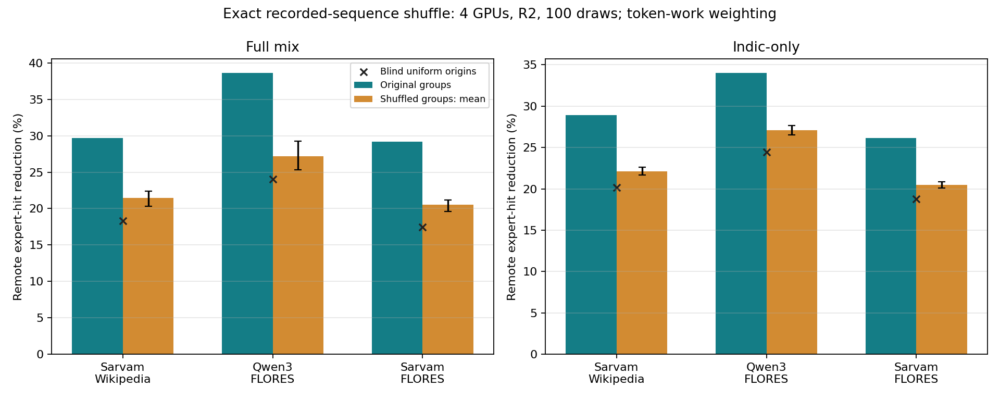
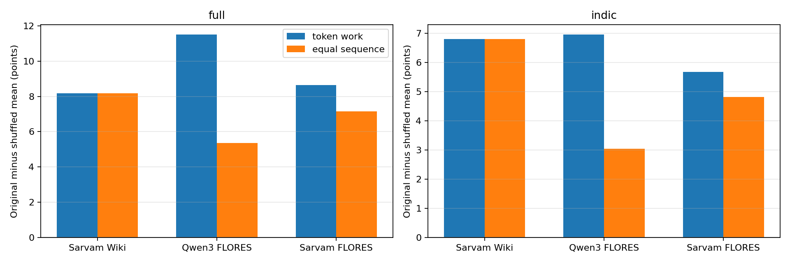
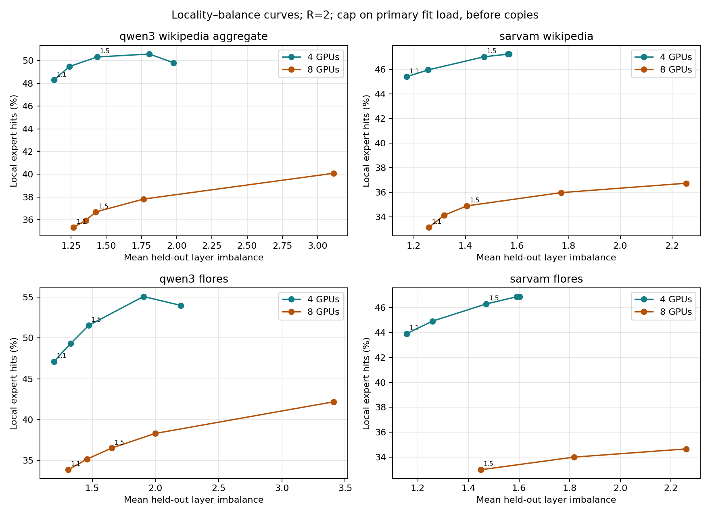
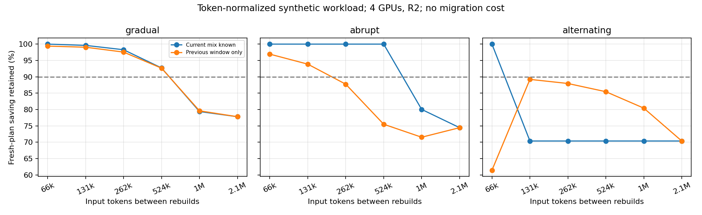

Separate local results · 9 November 2026
New finding: original language groups outperform shuffled groups on all three available datasets, including Indic-only. The effect remains with length-normalized and parallel-sentence controls. These are recorded expert-hit results, not measured network bytes or latency.
Full report and caveats · Tables, figures and scripts
| Dataset | Original remote-hit reduction | Shuffled mean | Difference |
|---|---|---|---|
| sarvam wikipedia | 28.94% | 22.14% | 6.80 points |
| qwen3 flores | 34.04% | 27.09% | 6.95 points |
| sarvam flores | 26.17% | 20.49% | 5.68 points |
100draws, exact group cardinalities; fit/evaluation independently shuffled. This condition tests the recorded language/home association under fixed learned group capacities. It does not isolate linguistic ancestry or establish hardware speed.


Curves cover four and eight GPUs over five caps. New data panels use token-work weighting; the older Qwen3 Wikipedia panel retains its earlier weighting. Caps apply before adding replicas and do not guarantee held-out total GPU load.

Explicit synthetic scale:65,536inputtokens/window. Gradual R2 drift passes the90%retention criterion at up to524,288tokens; abrupt changes at up to131,072. These are scenario-specific, not a deployment recommendation.

Qwen3 Wikipedia still lacks multi-language per-sequence data and is excluded from the exact shuffle. Its aggregate counts support the curve only. Earlier results are unchanged. No GPU/model execution or automatic GitHub push.